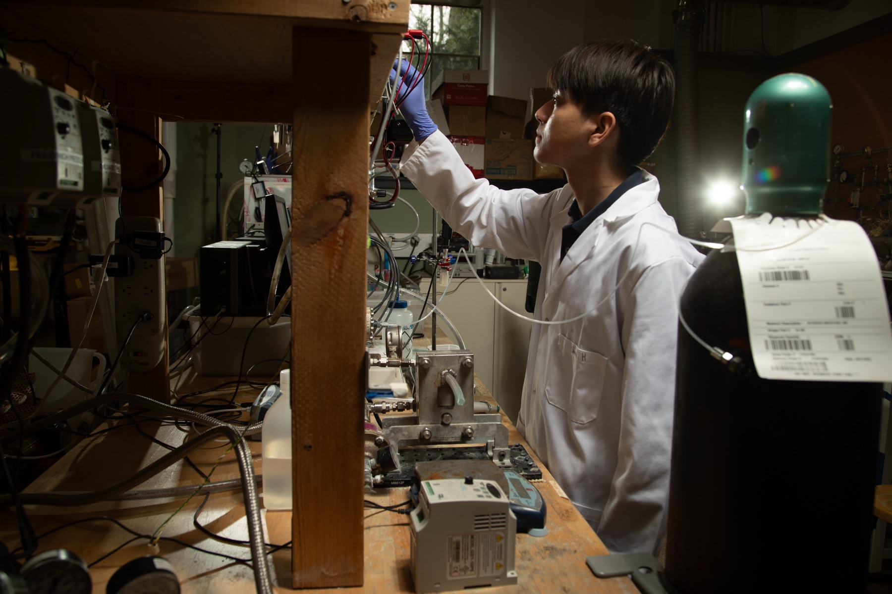
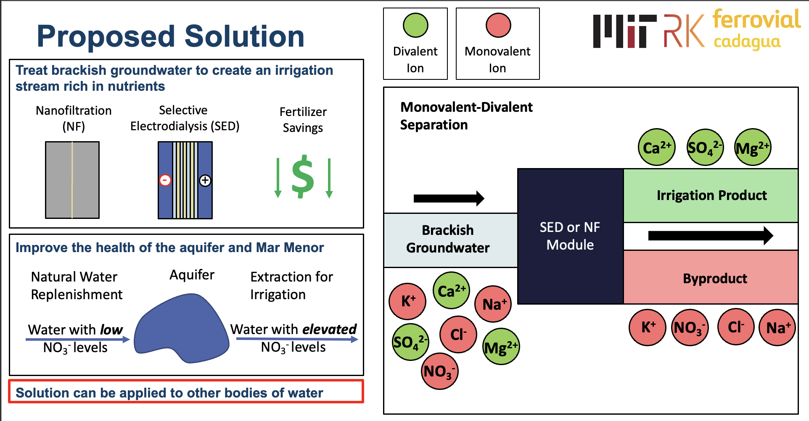
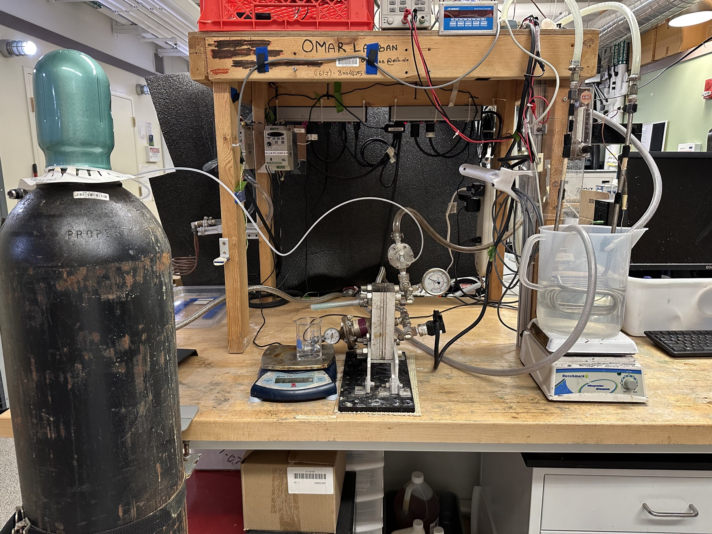
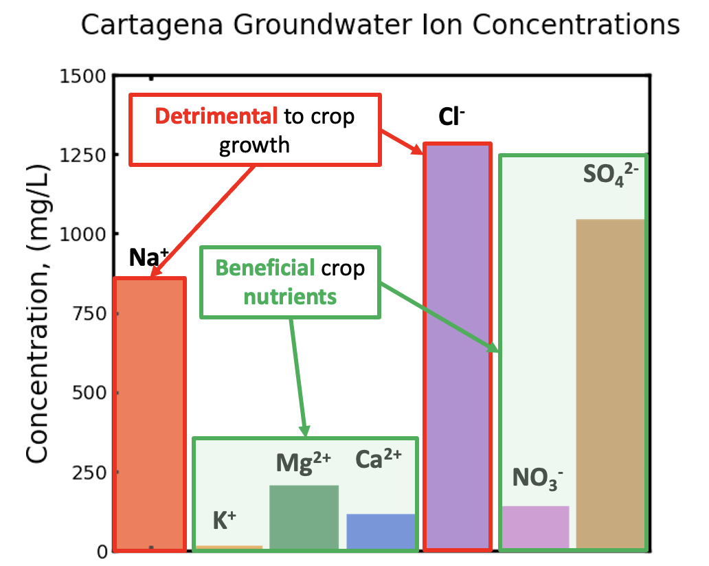
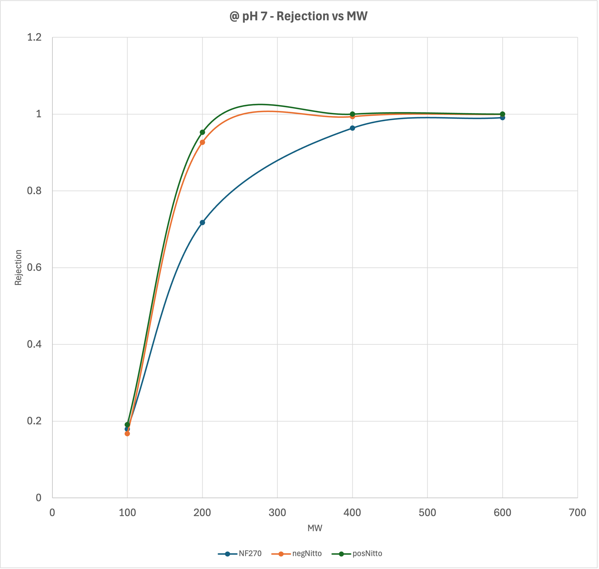
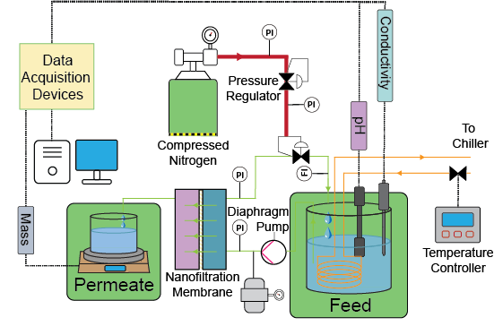

Nutrient Recovery from Brackish Groundwater
January 2024 – September 2024 · The Lienhard Research Group





Summary: Investigated recovery of crop nutrients from brackish groundwater in southeast Spain using monovalent-selective electrodialysis (MSED) and nanofiltration (NF), removing the sodium and chloride that harm crops while keeping the magnesium, calcium and sulfate they need. I ran the NF experiments independently and refined a semi-empirical multi-ion transport model in Python that reproduced the experimental trends, then wrote the final report.
Skills
- Experimental design, wet lab work and lab documentation
- Multi-ion transport modeling and data analysis in Python
- Nanofiltration and electrodialysis experiments
Technical details
Background. The Campo de Cartagena basin in southeast Spain faces stressed hydrology and eutrophication of the Mar Menor from groundwater overuse and pollution. Its brackish groundwater is high in monovalent ions that harm crops (Na⁺, Cl⁻) but rich in nutrient ions (Mg²⁺, Ca²⁺, SO₄²⁻), so it is low-quality for direct irrigation and underused. Conventional reverse osmosis removes nearly all ions, forcing fertilizer to be added back downstream.
Method. I ran NF and MSED experiments with synthetic brackish groundwater modeled on the region, combining hands-on experiments with computational modeling to understand ion transport.
- Designed and executed NF and MSED trials to assess ion selectivity and flux under variable feed salinities and pH
- Measured ion concentrations with conductivity meters to determine transport numbers and selectivity coefficients
- Calibrated a semi-empirical multi-ion transport model in Python and validated it against experimental data
- Compiled the experimental datasets into a reproducible analysis pipeline

Nanofiltration diagram I made.
Results. Combining MSED with NF selectively removed the harmful monovalent ions while preserving the nutrient ions, producing irrigation-ready water that reduces fertilizer demand and brine waste. The refined transport model reproduced the experimental trends, giving a predictive tool for choosing system design and operating conditions.
This was my first research experience in mechanical engineering and sustainability. I built wet-lab skills, learned how graduate-level research is run, and practiced connecting experiments to ion-transport modeling.